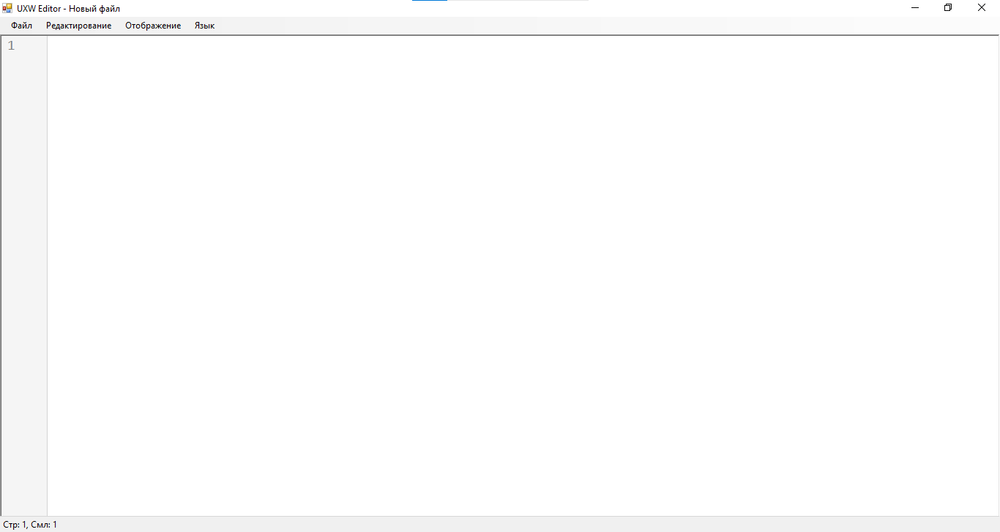
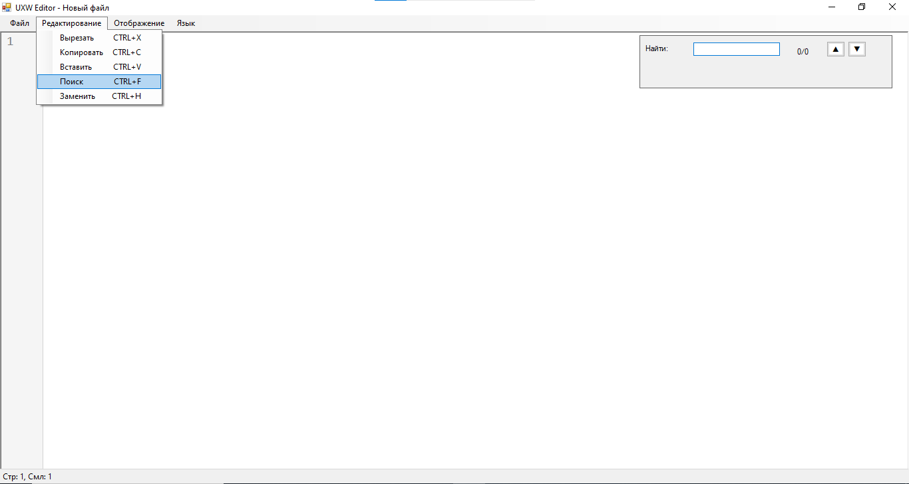
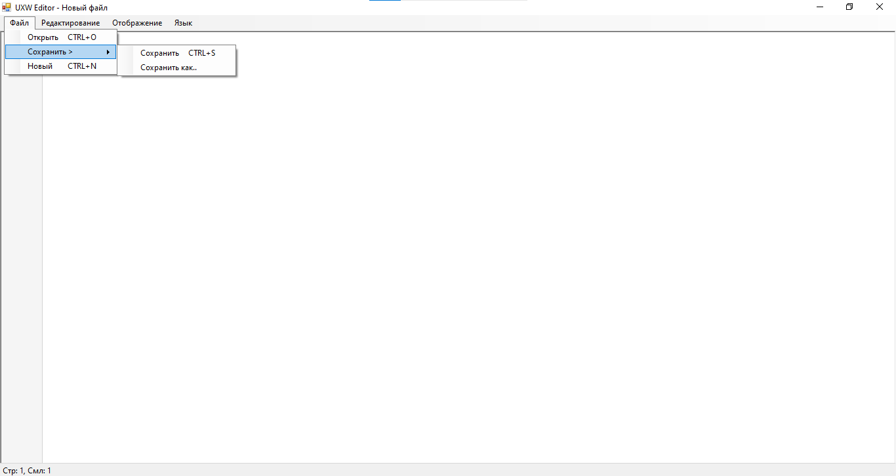
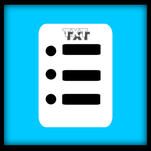

~ Здесь вы можете скачать утилиту совместимую с будущими файлами в PCCleaner --- .uxw.
~ Эта утилита позволяет открывать файлы .uxw и другие позволяя редактировать их.
~ Эта программа выполняет функции:
~ Открыть,сохранить/сохранить как,новый лист.
~ Вырезать,вставить,копировать,поиск и замена слова.
~ Отображение строк сбоку вкл или выкл.
~ Поддержка русского и английского языка.



